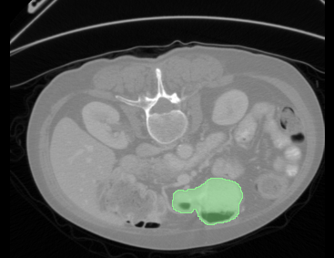

| Configuration | Stage 1 | Stage 2 | Stage 3 |
|---|---|---|---|
| Optimizer Hyperparameters | betas=(0.9,0.99), eps=1e-8 | betas=(0.9,0.99), eps=1e-8 | betas=(0.9,0.99), eps=1e-8 |
| Learning rate schedule | Cosine | Cosine | Cosine |
| Numerical precision | bfloat16 | bfloat16 | bfloat16 |
| 1 epoch | 3 epochs | |||
|---|---|---|---|---|
| closed | open | closed | open | |
| w/o CoT | 66.38 | 32.56 | 83.62 | 59.33 |
| w/ CoT | 68.97 | 37.16 | 89.66 | 65.23 |
| Modality | Example |
|---|---|
| Chest CT | Q: Is there a mass in the left lung? CoT answer: Find the left lung <3d_bbox_1> . Observe the left upper lobe <3d_bbox_2> , the left lower lobe <3d_bbox_3> , and the left lung <3d_bbox_1> . Considering all observations, there is no mass in the left lung <3d_bbox_1> . So the answer is no. |
| Abdominal CT  |
Q: Is there a gastric tube in the stomach? CoT answer: Find the stomach <3d_bbox_4> , and there is no gastric tube in the stomach <3d_bbox_4> . So the answer is no. |
Brain MRI |
Q: Is there communicating hydrocephalus? CoT answer: Find the left lateral ventricle <3d_bbox_5> and right lateral ventricle <3d_bbox_6> . Both are symmetrically enlarged, suggesting communicating hydrocephalus. So the answer is yes. |
| ID | Region report generation | ||
|---|---|---|---|
| R-L | BERTScore | F1CheXbert | |
| 1 | 8.09 | 68.33 | 13.94 |
| 2 | 16.45 | 79.18 | 20.72 |